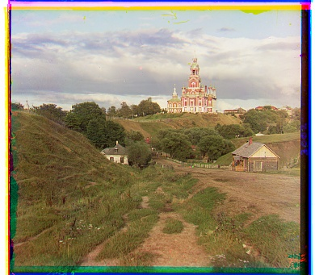

Overview
In this project, we are given digitized Prokudin-Gorskii glass plate images, where in 1907 Sergei Mikhailovich Prokudin-Gorskii tried taking color photographs across the Russian Empire by recording three exposures of every scene onto a glass plate using a red, green and blue filter. The goal of this project is to align the red and green exposures to the blue exposure, and then use the three separate channels to create a nice color image.
Approach
We assume a simple x,y translation using the blue channel as a reference is sufficient for proper alignment. Starting with low resolution jpg files, we use an exhaustive search by searching over a window of (-15,15) pixels for the best alignment vector that maximizes the Normalized Cross-Correlation (NCC), between the blue channel and the channel we are aligning. The vectors with the highest NCC for the red and green channels are used to shift the red and green channels, and then we stack the channels for a full RGB image. Finally, we convert the images back to the RGB color space and save the results.
There were two key factors I had to account for to properly align the image. First, the borders of the image had to be cropped due to signifcant artificats which hurt the process of finding the best alignment vector. Thus, I cropped the image at all sides by 10% of the image size. On top of this, for finding the max NCC between the blue channel and the channel being aligned, we can not compare the pixel values directly as RGB channels have different brightness levels. To account for this, I first normalized each exposure, and then converted the channels to their luminance value, and then found the NCC.
However, this search window is too small for the larger .tif files, and increasing the window by a large factor leads excessive computation time. To solve this, I implemented a recursive coarse to fine search using image pyramids. I set a base image width of 30 pixels and started with an alignment vector of (0,0). The method recursively downscales the image by half until the base image width is reached, and then finds the best alignment vector for the current image size. After this, the method scales the vector back up by a factor of two to account for the downscale, and then continues on the next level of recursion. This process continues until the entire image is processed. For each image size, I search over a window of (-10,10) pixels, which was found to give good results.
Out of the given images, the only channel I found not align properly was the red channel for the Emir photo. I noticed if I increased the border crop, the image would properly align, however, it would negatively affect some other photos, so I left it at 10%.
Results

Cathedral
R: (3, 12)
G: (2, 5)

Monastery
R: (2, 3)
G: (2, -3)

Tobolsk
R: (3, 6)
G: (3, 3)
Church
R: (-4, 58)
G: (0, 25)
Harvester
R: (13, 124)
G: (16, 60)
Icon
R: (23, 89)
G: (17, 40)

Lady
R: (10, 117)
G: (8, 53)
Melons
R: (2, 3)
G: (9, 82)
Emir
R: (11, 178)
G: (2, -3)
Onion Church
R: (36, 108)
G: (26, 51)

Sculpture
R: (-26, 140)
G: (-11, 33)
Self Portrait
R: (36, 176)
G: (28, 78)
Three Generations
R: (9, 111)
G: (12, 54)
Train
R: (31, 87)
G: (5, 43)